Hai Adelllll Cantik…
Ada sesuatu yang ingin aku sampaikan. Aku membuatnya khusus untukmu.
Tip: gunakan tombol musik untuk menghentikan / melanjutkan musik latar.
Ada sesuatu yang ingin aku sampaikan. Aku membuatnya khusus untukmu.
Tip: gunakan tombol musik untuk menghentikan / melanjutkan musik latar.
 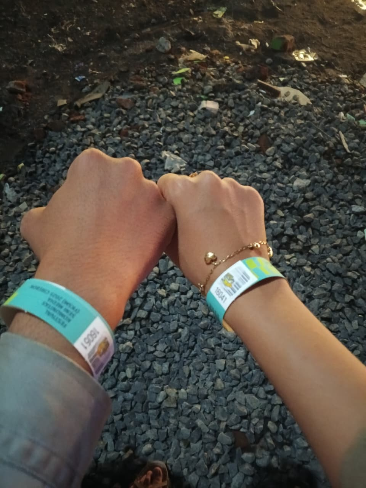
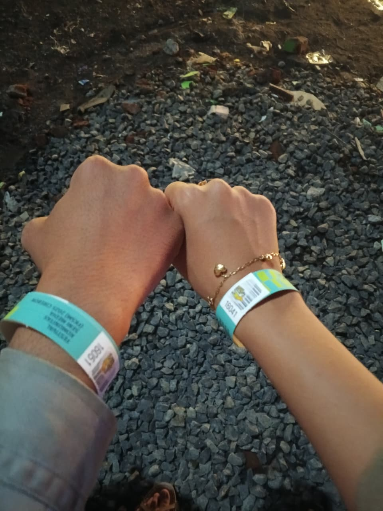
 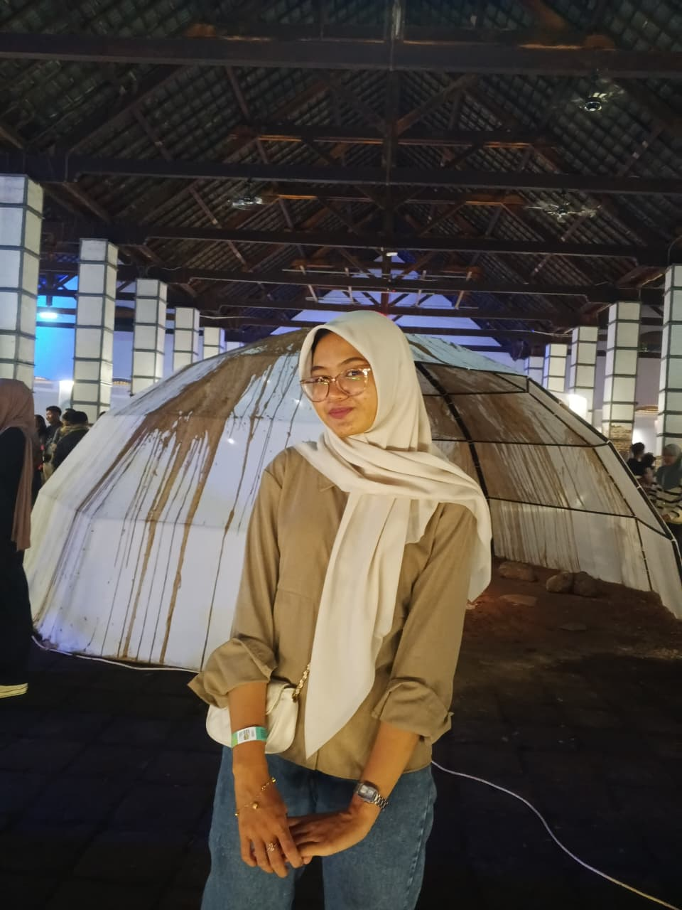
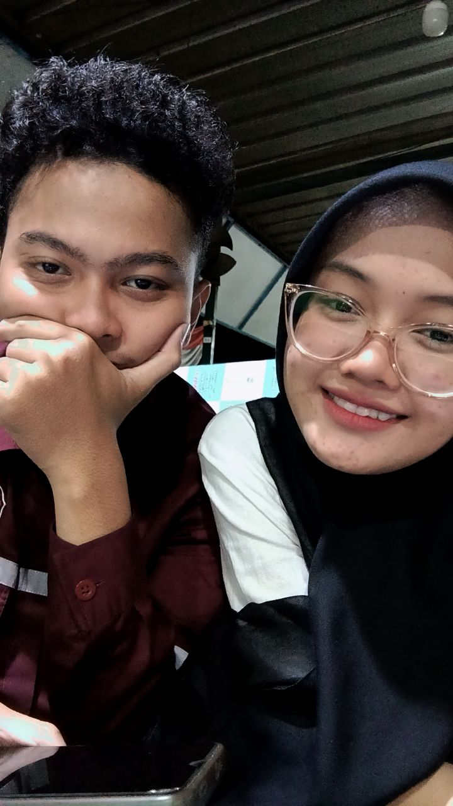
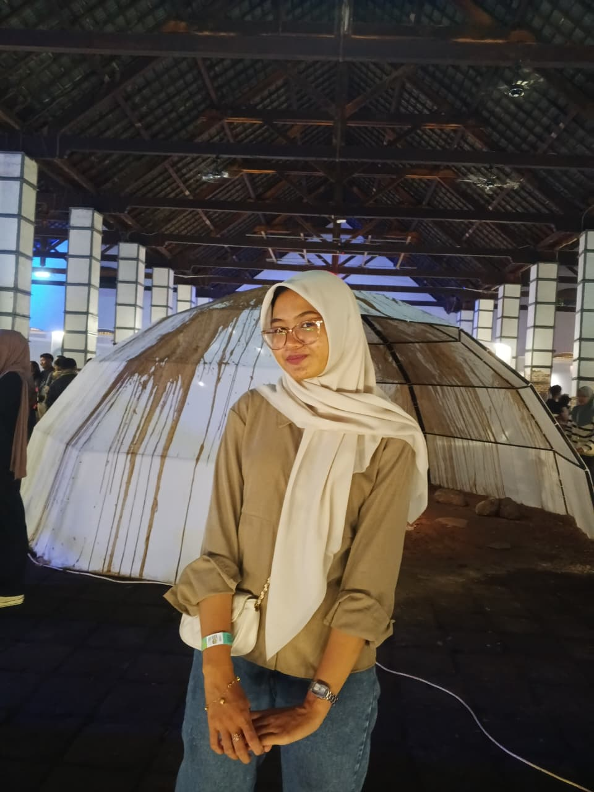
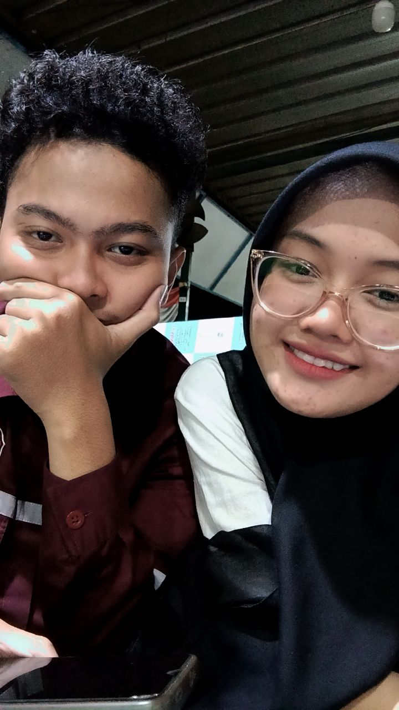

 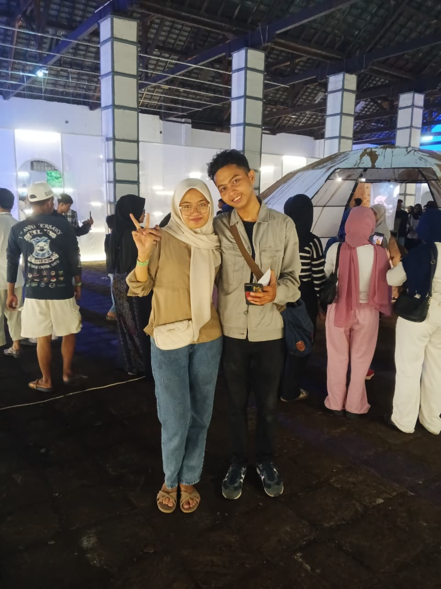
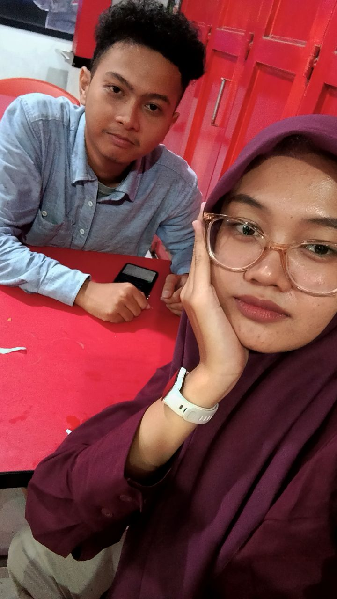
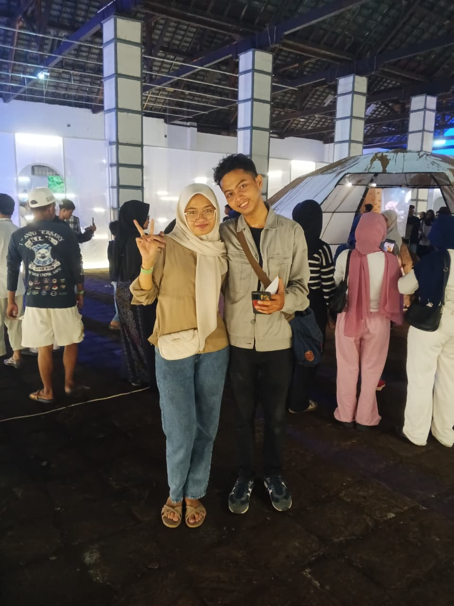
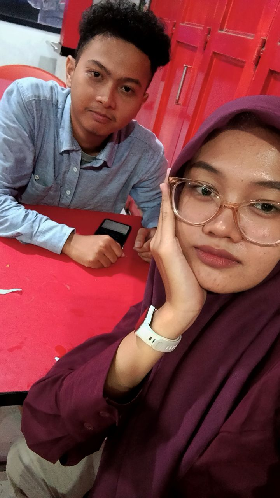
 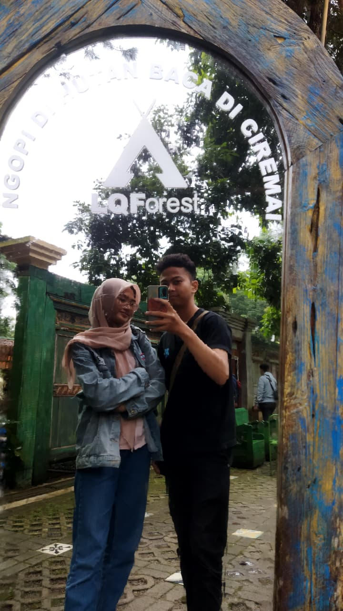
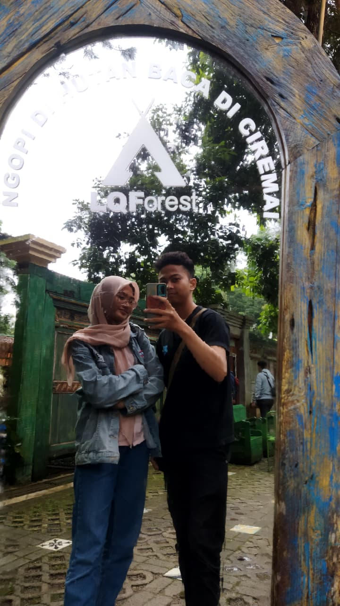